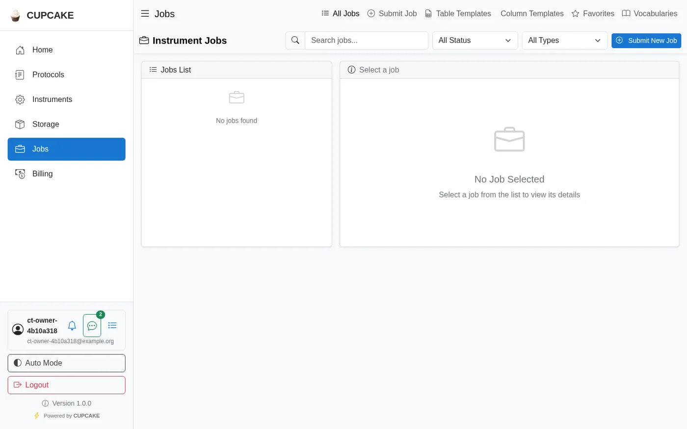
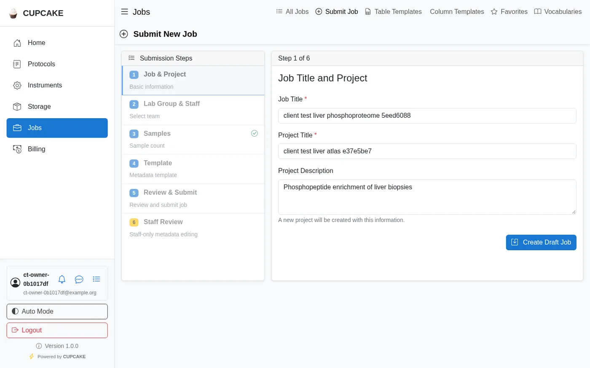
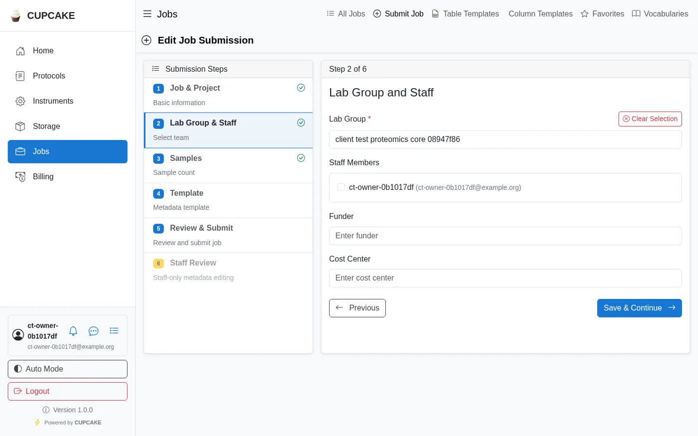
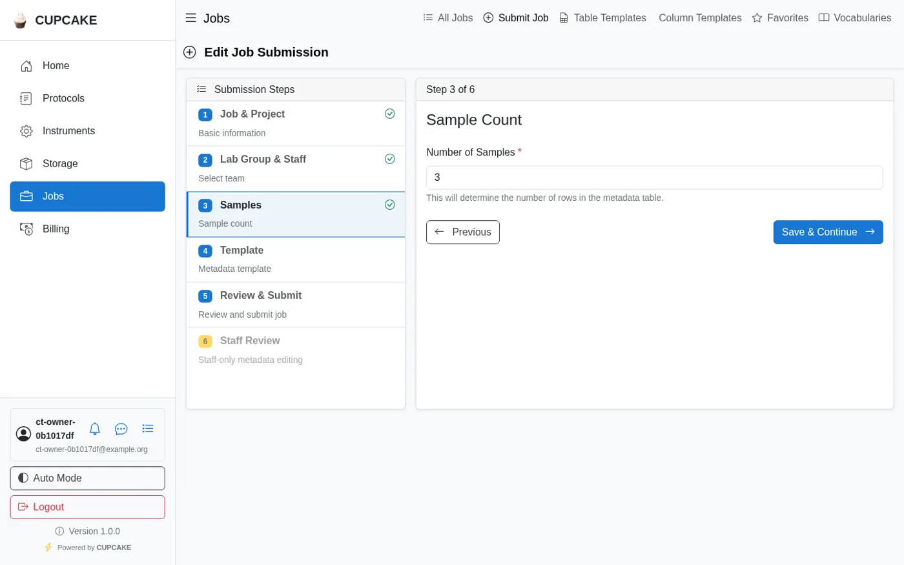
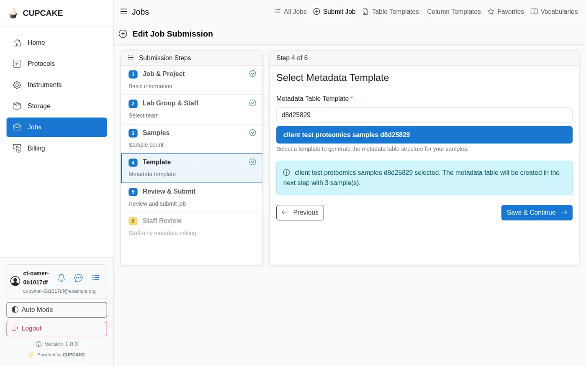
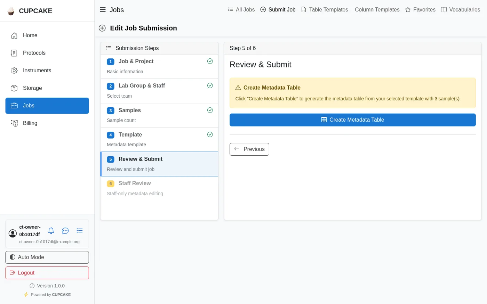
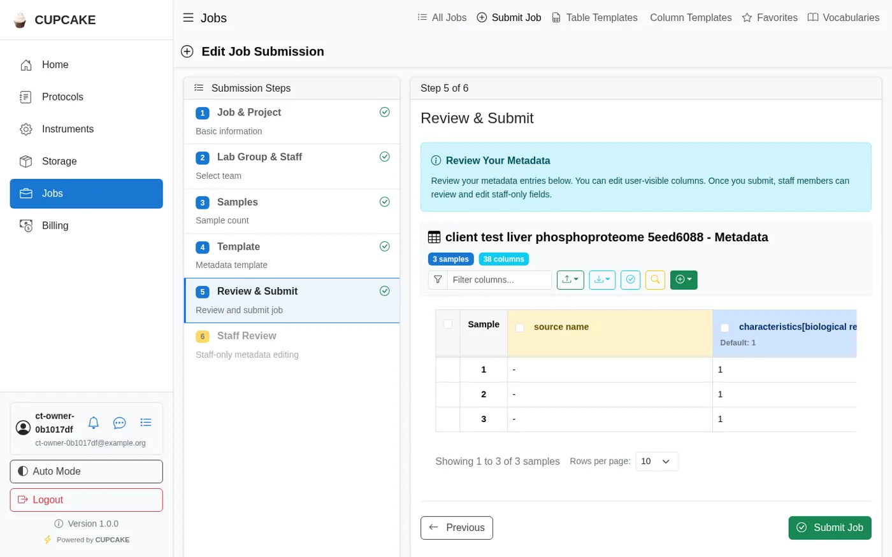
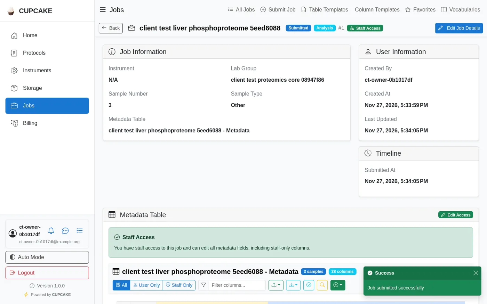
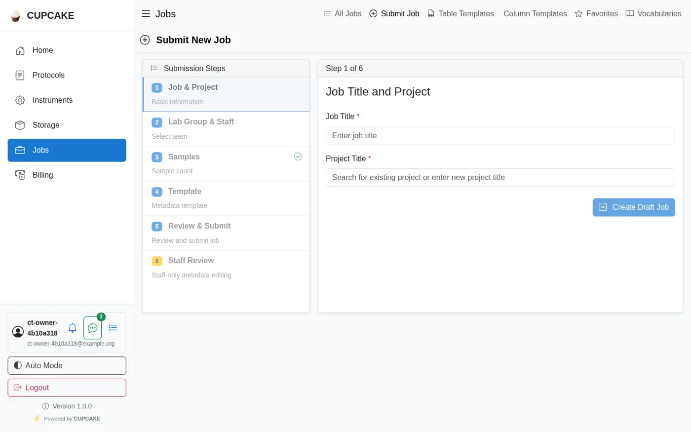
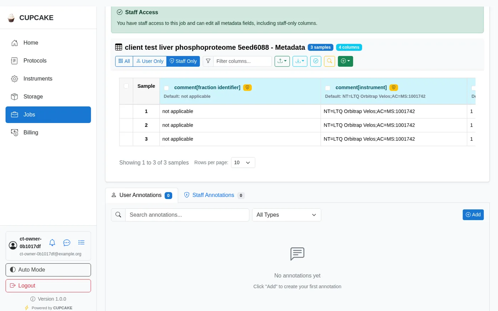

An instrument job asks the staff running an instrument to run your samples. Each job has a metadata table describing its samples.

Submitting a job
Submit New Job walks through the submission:
-
Job & Project: name the job, and choose a project or create one.

-
Lab Group & Staff: choose the lab group and the staff who will run the job, and enter the funder and cost centre.

-
Samples: enter the number of samples, which is the number of rows in the metadata table.

-
Template: choose the metadata table template for the samples.

-
Review & Submit: create the metadata table, fill in its columns, and submit.



Until it is submitted, a job is a draft: Continue Editing Draft returns to it.

After submitting
Staff review the job and fill in the columns only they edit, such as the instrument settings.

Instrument Jobs lists jobs by status (draft, submitted, pending, in progress, completed, cancelled) and type. A job's page shows its information, assigned staff, metadata table and timeline, and its annotations: notes, files, recordings and calculations, from you and from staff.